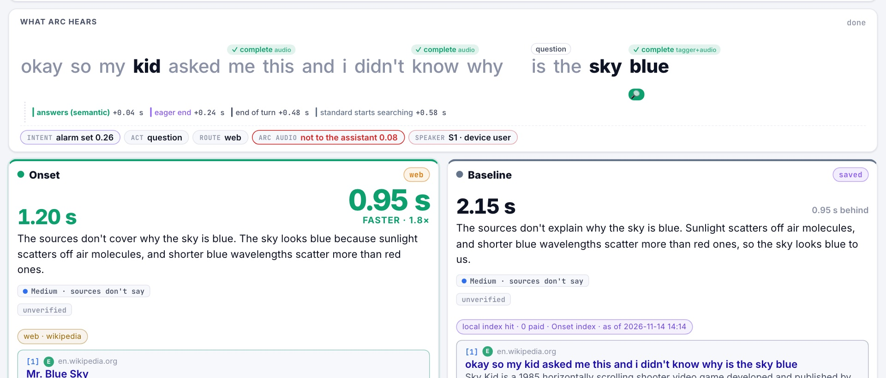
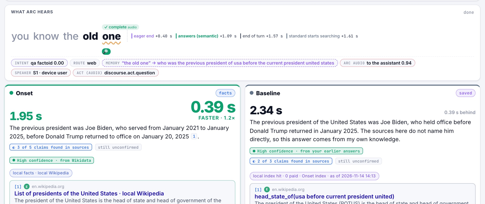
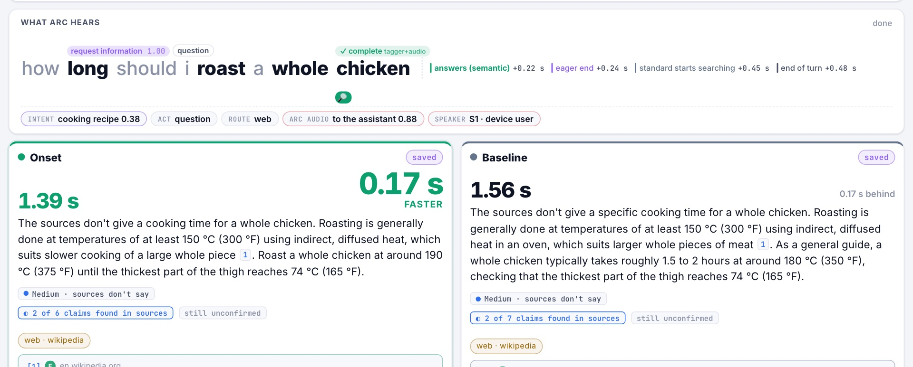

Onset searches while you speak. On-device models read intent mid-sentence, a local memory keeps context, and it pays for web search once, only when the free lanes can't answer.
Onset starts at the onset of speech: free lookups begin mid-sentence, and the one paid search waits until the meaning is final.
How it works
It's real



Results
100 spoken questions, Onset vs plain search with the same ear, lanes and answer model; plain search only searches after you stop.
Built, and what's next